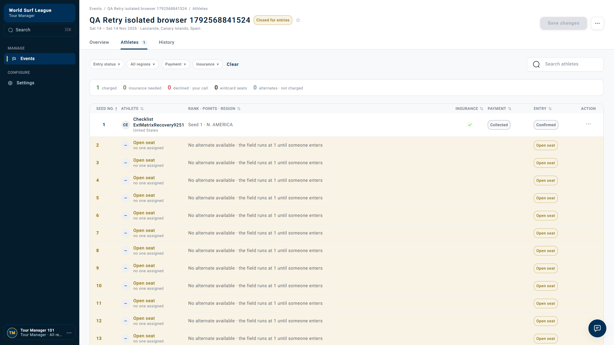

Payment retries · QA-RETRY-04 · Bug report · Tracked in WSL-9744
Manager roster stays Declined and Pending after valid-card recovery succeeds until page refresh
21 October 2026 · P3 suggested · Live dev / independent athlete and manager browser sessions
All four bug reports · Full 110-case execution · Download bug report
Jira ticket and complete evidence report
Priority: Low · Created 21 October 2026 · Download the complete Jira description with logs, test results and acceptance criteria
Backend validation and logs
Timestamped API/UI log and roster snapshots · Payment unit-test results · Payment Postgres integration results
Live recovery run: 12 assertions passed, 1 failed (open roster refresh). Backend readback was Collected/Confirmed; same-key replay recorded one success, and paid retry returned 409. This is a UI refresh defect; no failing backend test is claimed for it.
- PASS: test_happy_path_charges_the_pinned_saved_payment_method
- PASS: test_charge_already_charging_is_rejected_without_a_second_gateway_call
- PASS: test_charge_lifecycle_ready_charging_paid (Postgres)
Summary
Reproduced: RET-105
A successful entry-fee recovery updates the API to Collected and Confirmed, but an already-open manager roster retains Declined/Pending and stale counters throughout the 90-second observation.
Impact: Tour Managers can see an incorrect unresolved decline and take unnecessary follow-up actions until they refresh. This run recorded one successful history outcome and rejected paid retry with HTTP 409; no duplicate capture was shown.
Evidence scope and limits
The deployed source revision and intended refresh SLA were not verified. The local useSeedList hook has no polling interval, which is consistent with the observation but is not a proven deployed root cause.
Priorities are QA suggestions. Jira tracking is linked above. No application fix, refund or shared dev database/policy modification was made during execution.
Recording and execution record
Actual live dev browser recording. The manager session stays authenticated while the athlete changes the card in an independent session. API setup and card requests run outside the visible page.
Before refresh: Declined/Pending · After refresh: Collected · Timestamped API and UI checks

Steps to reproduce
- On dev, enter a controlled QA event with the saved declining Stripe test card and use Confirm and charge.
- Verify the entry is Declined/Pending. Keep the manager Athletes tab open.
- Using a separately authenticated athlete session, change that entry to the valid saved Visa.
- Replay the same card-change idempotency key and confirm safe HTTP 202 responses.
- Poll the API independently while observing the untouched manager tab for 90 seconds.
- Verify API payment is Collected and entry is Confirmed while the manager row remains Declined/Pending.
- Reload the manager page and reopen Athletes; observe Collected and corrected entry status.
Expected versus actual
| Expected | Actual |
|---|---|
| The open roster reflects successful asynchronous recovery: Collected payment, Confirmed entry, updated counters. | API: Collected/Confirmed. Open roster: Declined/Pending after 90 seconds. Reload: Collected. |
Technical investigation
Source: wsl-frontend/src/features/tour-manager/hooks/use-tour-manager.ts:401 — useSeedList (likely explanation only)
F-04 — Open manager roster remains stale after successful card recovery - Matrix: RET-105. Suggested priority: P3 for stale operational status; confirm intended live-update behavior with the product owner. - Environment: live dev, 21 October 2026, separate authenticated athlete and manager browser contexts. - Event: `01a15d6d-df77-76f9-99fa-5cff13be3f99`; entry: `01a15d6d-eb6b-762c-bf81-59240b572ff4`. - Reproduction: confirm and charge the declining Stripe test card; leave the Tour Manager Athletes tab open; change the athlete's entry to a valid saved Visa from a separate session; observe the existing manager tab for 90 seconds; reload. - Expected: the open roster reflects successful asynchronous recovery, with Collected payment, Confirmed entry, and updated counters. - Actual: card change returned HTTP 202 at 07:47:41 UTC. API readback reached Collected/Confirmed, while the open roster remained Declined/Pending through the observation period. After refresh at 07:49:32 UTC, it displayed Collected. Exactly one successful history outcome was recorded; paid retry was rejected with HTTP 409. - Evidence: `recovery-before-refresh.png`, `recovery-after-refresh.png`, `recovery-recording.webm`, and `recovery-results.json` in the published execution folder. Original shared-cookie observation was retested independently and is not used as sole proof. - Code observation: `wsl-frontend/src/features/tour-manager/hooks/use-tour-manager.ts:401`, `useSeedList`, defines a query key and fetch function without a polling interval. This is consistent with the stale view, but the deployed revision and all global invalidation mechanisms were not verified, so it is a likely explanation rather than a proven production root cause. - Frontend direction: invalidate or refresh relevant seed-list, summary and history queries on asynchronous payment updates, with bounded polling or a suitable event channel. Avoid relying only on mutations initiated in that manager tab. Preserve unsaved seed edits during refresh.
Visual evidence


Acceptance criteria for a fix
- Verify open roster, counters and entry history refresh after payment from another browser/session.
- Preserve unsaved seed-order edits during refresh.
- Verify declined, pending and collected transitions, reconnect/focus behavior and bounded refresh timing.